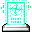

ヴェフメット Vehumet
英語版 CrawlWiki の記事「Vehumet」(0.34 向け、2026-07-19 版)の翻訳です。原文の著者は編集履歴をご覧ください。


『殺して地獄の火にくべよ！』| ヴェフメットは破壊的な魔法の力を司る神である。信徒は秘伝の術を駆使するにあたっての神の助けを手にし、そして最も寵愛を受けた者は、ヴェフメットの蔵書に記された恐るべき呪文を利用する資格を与えられる。ヴェフメットへの献身はあたう限りの虐殺と破壊とを引き起こすことをもって証明することができる。
ヴェフメットの信徒は殺害を行うことで魔法の力を急速に回復する。信仰が高まるにつれて攻撃呪文はさらなる強化を得る。まず攻撃呪文の詠唱を助け、そして妖術の射程範囲を伸ばす。ヴェフメットは信仰が深まるにつれ、信徒にさらに強力な破壊の呪文の知識を下賜する提案を行う。 ヴェフメットは、あなたが生者を殺すこと、あなたが不死者を滅すること、あなたが悪魔を殺すこと、あなたが神聖な存在を殺すこと、あなたが生命を持たぬものを破壊することを好む。 |
制限
好む行い
嫌う行い
- 何もしないこと: 平均して340ターンごとに信仰心が1減る(20ターンごとに1/17の確率)。
- 棄教。
授かる能力
信仰心 -: 『魔術師見習い』
- 入信するとすぐに、ヴェフメットは呪文の贈り物を申し出る(詳しくは後述)。
信仰心 *: 『破壊を探求する者』
- 殺害による力の獲得 - モンスターを殺すと、信仰心に応じた確率で MP が回復する。
30 + (50 * (max(piety - 30, 130)/130)% の確率で[1]1d(HD/2)の MP が回復する。[2]HD は倒したモンスターのヒットダイスだ。信仰心が 6* なら確率は80%になる。(常時効果)
信仰心 **: 『破滅の詠唱者』
- 新しい能力はない。
信仰心 ***: 『魔術師』
- 破壊の魔法の補助 - 破壊の呪文の詠唱に失敗する確率が大きく下がる。魔術強化を2つ重ねたのとおおよそ同じだ。
- 具体的には、補正前の呪文失敗率が x66.6% される。実用的な失敗率の範囲なら、実際の失敗率はたいてい (previous_fail% * .666) より小さくなる。このボーナスは魔術強化として扱われるわけではない点に注意。魔術強化 x3 を持つのと、ヴェフメットのボーナスに魔術強化 x1 を足すのとは同じにならない。ヴェフメットのボーナスと魔術強化は掛け算で重なる。
信仰心 ****: 『戦闘魔術師』
信仰心 *****: 『大魔術師』
- 新しい能力はない。
信仰心 ******: 『破壊魔術の指導者』
- 新しい能力はない。
破壊の呪文
ヴェフメットの言う「破壊の呪文」には、妖術の呪文すべてに加えて、spflag::destructive フラグを持つ次の呪文が含まれる。[3]
贈り物
呪文。 信仰心がそれぞれの段階を超えていて、贈り物を受け取れる状態なら、ヴェフメットが破壊の呪文の知識を申し出ることがある。申し出る呪文は最大15個だ。[4]
| 贈り物 | 1 | 2 | 3 | 4 | 5 | 6 | 7 | 8 | 9 | 10 | 11 | 12 | 13-15 |
|---|---|---|---|---|---|---|---|---|---|---|---|---|---|
| 呪文レベル | 1 | 2-3 | 2-3 | 3-4 | 3-5 | 4-7 | 4-7 | 5-7 | 5-7 | 5-7 | 5-7 | 6-8 | 8-9 |
最初の贈り物は必ず入信と同時に届く。新しい贈り物が申し出られると、ひとつ前の贈り物は習得できなくなる。最後の3つの呪文はどれもレベル8-9で、まとめて一度に申し出られ、ヴェフメットを信仰し続けている限りいつでも習得できる。ヴェフメットは、すでに呪文ライブラリにある呪文は贈らないし、以前に申し出た呪文もなるべく避けようとする。
贈り物はスキルの傾向に沿ったものになりやすい。すべての呪文系統が考慮され、複数の系統にまたがる呪文はそれらのスキルレベルの平均で重みづけされる。
贈り物を受け取る時期
贈り物が残っていれば、ヴェフメットは次のタイミングで呪文を贈る。[5]
- 1つ目: 必ずすぐに贈られる。
- 2〜5つ目: 信仰心が 53、71、89、107 に達するまでにそれぞれ必ず贈られる。これより少し早く届くこともある。
- 6〜15個目: 信仰心が 120 (5*) 以上になると贈り物のタイムアウトの仕組みが使われ、タイムアウトは
28 + (2d30)/2になる。[6]タイムアウトが 0 のときは、信仰心が上がるたびに5%の確率で贈り物が届く。- 最後の4つ(12〜15個目)は、信仰心が 6* でないと贈られない。
贈り物と贈り物のあいだには 98 + 2d50 ターンの待ち時間がある。待ち時間の最中に贈り物の段階に達しても、贈り物はもらえない。2〜5つ目なら、次に信仰心が上がったときに受け取れるだけだ。ただし 5* 以降の贈り物では、5%の判定をもう一度引き直す必要があるので、理屈の上ではこの待ち時間が効いてくることもある。
懲罰
| ヴェフメットは棄教を喜ばず、不忠義な信徒に恐るべき懲罰をもたらす！
ヴェフメットを怒らせた者にはたちまち破壊の力が殺到する。初級冒険者は火炎や冷気に打たれ、大魔道師は水晶槍や炎の嵐を浴びる。自身が放つ妖術もまた、最悪の状況で失敗するといったことが常となるだろう。 ヴェフメットの怒りは比較的短い間で収まる。 |
ヴェフメットを棄教した者は、さまざまな有害な妖術を定期的に浴びせられる。呪文レベルが 1 + XL/5 から 1 + XL/3 までの、いろいろな呪文が飛んでくる。[7]
また、破壊の呪文を唱えるたびに、5%の確率でヴェフメットから罰を受ける。[8]呪文そのものは成功するが、それとは別に呪文失敗の効果が起こる。
戦略
ヴェフメットを信仰すれば、ゾットの領域:5 まで通用する「エンジン」、つまり敵を倒す手段がほぼ確実に手に入る。一方で、発動型の能力が何もないので、緊急事態には弱い。ある意味では、ヴェフメットを信仰しているというより、自分の呪文こそが本当の神だと考えたほうがいい。
入信と同時に始まる厳選された呪文の贈り物のおかげで、あの厄介な炎の球体(と、ほかのたいていのもの)を倒す手段がまず確保できる。魔術強化2つ分の効果がタダで付くので、強力な呪文が早く実用的になる。3ルーンのゲームでもレベル9の呪文が(より)現実的に使えるようになる。射程+1も呪文によってはありがたい。しかも、これらはすべて祈祷スキルに一切投資せずに得られる。魔術強化の効果と合わせれば、信徒は防御系のスキルに多めに振ったり、いっそ近接との両刀にしたりする余裕も生まれる。
「呪文を神にする」のが良いことかどうかは人それぞれだが、欠点もいくつかある。発動型の能力がないので、危険な状況を切り抜ける手段は少なくなる。さらに、ヴェフメットは序盤では弱い部類の神だ。呪文使いの職業なら、最初のいくつかの贈り物は手持ちの呪文とたいして変わらないことが多い。呪文に慣れていないキャラクターは魔法スキルを鍛える時間が必要で、1* や 3* になった頃でもまだそれほど強くないかもしれない。それに、神の枠を使わずに「エンジン」を手に入れる方法はほかにもある。
まとめると、ヴェフメットは見た目ほど単純な神ではない。呪文は強いかもしれないが、発動型の能力がない分を補うには、やはり全般的にしっかりした立ち回りが必要だ。
小技
- MP の還元は序盤ではかなり控えめだが、敵をまとめて倒せる高レベルの範囲攻撃呪文と組み合わせると本領を発揮する。そもそも呪文を使う必要すらない。魔法の杖で殴り殺しても、ワンドを撃っても同じように効く。
- ヴェフメットはまだ見たことのない呪文を贈ろうとするので、理屈の上では「どうでもいい」呪文を買っておけば、欲しい呪文を引く確率を上げられるかもしれない。
- ヴェフメットは、信仰で得た恩恵(贈り物として直接覚えた呪文)を残したまま棄教できる数少ない神のひとつだ。
- MP の回復が強力なので、ヴェフメットはエクステンデッドでもまずまずの神だ。ただ、役に立つ発動型の能力を持つ神のほうが好まれるかもしれない。たとえば輝けるものは発動型の能力があるうえ、邪悪なモンスター(エクステンデッドのモンスターの大半がこれに当たる)を倒すと HP と MP の両方が回復する。
- ヴェフメットは、実はジグラットに強い神のひとつだ。倒す敵の数がとにかく多いので、莫大な量の MP が手に入る。
変更履歴
- 0.34 より前は、最初の呪文の贈り物は入信時ではなく信仰心 1* で贈られ、贈り物の選定に使われるのは元素系のスキル(炎の魔術、氷の魔術、地の魔術、風の魔術)だけだった。また、バグのせいでヴェフメットがモンスターの呪文の射程まで伸ばしていた。[9]
- 0.32 より前は、殺害で MP を得る確率は
(piety-30)/2% で、2つ目の呪文の贈り物はレベル1-2だった。また、射程延長は雹の嵐、凍てつく城壁、エリンギャの毒沼には効かなかった。 - 0.31 より前は、ヴェフメットによる呪文失敗率の軽減と重ねられる魔術強化は1段階分だけだった。
- 0.26 で、ヴェフメットが贈る呪文のレベルの幅が広がった。
- 0.16 より前は、ヴェフメットは逆訓練を引き起こしうる呪文(炎/氷、風/地)を贈らないようにしていた。
- 0.12 でヴェフメットは全面的に作り直され、召喚術の支援、MP コストの軽減、魔法書の贈り物がなくなり、代わりに破壊の呪文を直接贈るようになった。0.12 より前のヴェフメットについてはこの版を参照。
出典
- ↑ mon-death.cc:2581 (0.32.1)
piety_breakpoint(0) = 信仰心 1* = 30
piety_breakpoint(5) = 信仰心 6* = 160 - ↑ mon-death.cc:2601 (0.32.1)
- ↑ spl-data.h:1 (0.32.1)
- ↑ religion.cc:1229 (0.32.1)
- ↑ religion.cc:1551 (0.32.1)
- ↑ religion.cc:1587 (0.32.1)
- ↑ god-wrath.cc:1089 (0.32.1)
- ↑ spl-cast.cc:2144 (0.32.1)
- ↑ https://github.com/crawl/crawl/commit/d5cd0e1a866c969c32fb65bd845d5f441ec64b9d
| 神 | |
|---|---|
| 善 | エリヴィロン • ジン • 輝けるもの |
| 中立 | アシェンザリ • ケイブリアドス • ディスメノス • フェダス・マダシュ • ゴザーグ・イム・サゴーズ • ヘプリアクルカナ • イグニス • オカワル • クァズラル • ルー • シフ・ムーナ • トログ • ウスカヤー • ヴェフメット • ウー・ジアン |
| 混沌 | ジーヴァ • ネメレクス・ソベー • ゾム |
| 邪悪 | ベオ • キクバークッグァ • ルゴヌ * • マクレブ * • イレデレンヌル * 混沌かつ邪悪 |